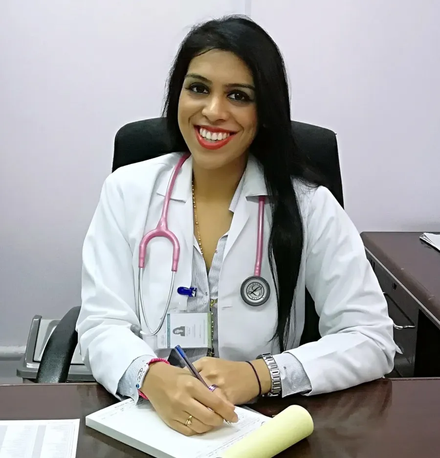
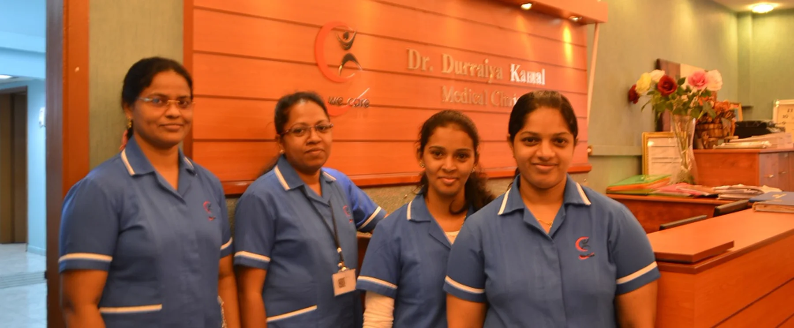

أطباء العائلةفي ساحة بني ياسمنذ أكثر من ثلاثين عاماً.

عيادة الدكتورة دُرّية كمال في ديرة. أطباء عامّون وطبيبة أطفال، واختصاصيون في الباطنية وأمراض النساء والأنف والأذن والحنجرة والمسالك البولية، ومعهم العلاج الطبيعي والأشعة والسونار ومركز للأسنان، كلها في العيادة نفسها.
- السبت – الخميس
- 8:30am–1pm · 4:30–9:30pm
- الجمعة
- 9–11am · 4–9pm
- المكان
- الطابق الأول، بجانب Habib Bank AG Zurich

الدكتورة دُرّية كمال
M.B.B.S., M.D. (Paediatrics) · المؤسِّسة
الأطباء
درست الدكتورة دُرّية الطب في الهند وجاءت إلى الإمارات عام 1984. هي طبيبة عامة وطبيبة أطفال: يأتيها الأطفال للفحص الدوري ومتابعة النمو والوزن والتطعيمات، والكبار للفحص العام ومتابعة الأمراض المزمنة. ومرضى كثيرون يراجعونها منذ سنوات.

د. دورايراجانM.B.B.S., M.D. (Internal Medicine)
السكري والضغط والكوليسترول. عمل أستاذاً ورئيساً لقسم الباطنية في مستشفى تعليمي حكومي في تاميل نادو.

د. ريخا هارشكومار جايسوالMBBS, MD (Obstetrics & Gynaecology)
الفحوصات، ومتابعة الحمل وما بعد الولادة، وعلاج أمراض النساء.

د. س. ك. بيرادارM.B.B.S., M.S., M.Ch (Urology)
المسالك البولية والجراحات الصغرى: الغُرَز، الأظافر الناشبة، إزالة الأجسام الغريبة والختان. خبرة أكثر من 35 سنة.

د. أنوجا ريجيM.B.B.S., DLO, DNB (ENT)
طبيبة عامة مع أعمال الأنف والأذن والحنجرة: منظار الأنف، فحص السمع، تنظيف الأذن وإزالة الأجسام الغريبة.

د. تيسيل جوي أناليلMBBS, General Physician
طب عام. خرّيجة إحدى كليات الطب في الإمارات.
مركز الأسنان: د. أرجمند أختر، د. نوشير محمد، د. براتيك تاماكووالا، د. غاياتري ماغو (تقويم الأسنان).
ما تعالجه العيادة
أغلب ما تحتاجه العائلة في مكان واحد. الأشعة والسونار والمختبر داخل العيادة، وهذا يساعد الأطباء على التشخيص بشكل أسرع.

طب العائلةفحوصات عامة، أمراض مزمنة، تطعيمات السفرد. تيسيل جوي أناليل
د. أنوجا ريجي
من أول فحوصات الطفل إلى احتياجات الكبار. فحوصات طبية عامة، ومتابعة الأمراض المزمنة، وتطعيمات السفر.
احجز على 04 223 8612الأطفالعيادة الطفل السليم، متابعة النمو، التطعيماتد. دُرّية كمال
- فحوصات دورية
- متابعة النمو والوزن
- التطعيمات حسب إرشادات منظمة الصحة العالمية
- عيادة الطفل السليم
الباطنيةعيادات السكري والضغط والكوليسترولد. دورايراجان
عيادات منتظمة لمتابعة السكري وارتفاع الضغط والدهون. في كل زيارة فحص ونصيحة للسيطرة على حالتك.
احجز على 04 223 8612صحة المرأةالنساء والولادةد. ريخا جايسوال
- اختبار الحمل ومتابعة الحمل
- المتابعة بعد الولادة
- وسائل منع الحمل وتركيب اللولب
- اضطرابات الدورة الشهرية
- السلس البولي
- الالتهابات المهبلية
- استشارات الصحة الجنسية
- الفحوصات
الأنف والأذن والحنجرةفحص السمع، شمع الأذن، الحساسية، التهاب الحلقد. أنوجا ريجي
- إزالة الأجسام الغريبة
- تخطيط السمع
- إزالة شمع الأذن
- خياطة الأذن
- منظار الأنف
- حساسية الأنف والتهابات الحلق
المسالك البولية والجراحات الصغرىالحصى، البروستاتا، الغُرَز، الأظافر الناشبةد. س. ك. بيرادار
- حصى الكلى والمثانة
- مشاكل البروستاتا
- ضعف الانتصاب والعقم
- الغُرَز
- إزالة الظفر الناشب
- الختان
العلاج الطبيعيالشد، التحفيز الكهربائي، الموجات فوق الصوتية، التأهيلأخصائي العلاج الطبيعي
- الشد
- العلاج بالتيار المتداخل والموجات القصيرة
- العلاج بالموجات فوق الصوتية
- TENS وتحفيز العضلات
- العلاج بشمع البارافين
- تأهيل القلب والرئة والأعصاب
الأشعة والسونارداخل العيادة على يد أخصائي الأشعةقسم الأشعة
أخصائي الأشعة عندنا يُجري الأشعة السينية والسونار هنا في العيادة، فيحصل طبيبك على الصور دون أن تذهب إلى مكان آخر.
اسأل على 04 223 8612مركز الأسنانفحص، حشوات، تيجان، تبييض، تقويمأربعة أطباء أسنان
- فحص الأسنان الدوري
- الحشوات والتيجان والجسور
- تبييض الأسنان
- تنظيف الأسنان
- تقويم الأسنان
- التوعية والوقاية
داخل العيادة
طابق واحد فوق ساحة بني ياس: الاستقبال، وصالة الانتظار، وغرف الأطباء، وغرفة الأشعة، ومركز الأسنان.


التأمين
هذه شركات التأمين والشبكات في قائمتنا الحالية. الخطط تتغير، فاتصل بنا ببيانات بطاقتك قبل الزيارة ونتأكد لك من خطتك.
- ضمان
- ثقة
- ADNIC
- AXA
- Bupa
- Oman Insurance Company
- MetLife
- Allianz Worldwide Care
- Al Buhaira National Insurance
- NAS
- NextCare
- Neuron
- Almadallah
- FMC Network UAE
- Vidal Health
- Iris Health Services
- Aafiya
- Fortune TPA Healthcare
- Pentacare
- Starwell
كيف تصل إلينا
الطابق الأول، بجانب Habib Bank AG Zurich، ساحة بني ياس، شارع المكتوم، ديرة، دبي
- دقيقتان مشياً من محطة مترو بني ياس
- الحافلات والباص المائي تتوقف بالقرب
- موقفان للسيارات متعددا الطوابق بالقرب
| السبت | 8:30am–1pm · 4:30–9:30pm |
|---|---|
| الأحد | 8:30am–1pm · 4:30–9:30pm |
| الاثنين | 8:30am–1pm · 4:30–9:30pm |
| الثلاثاء | 8:30am–1pm · 4:30–9:30pm |
| الأربعاء | 8:30am–1pm · 4:30–9:30pm |
| الخميس | 8:30am–1pm · 4:30–9:30pm |
| الجمعة | 9–11am · 4–9pm |
تُحمَّل خرائط Google عند الضغط